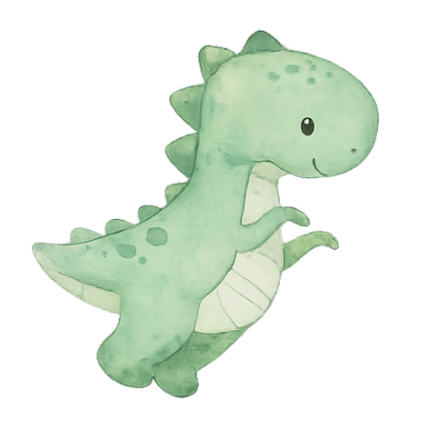
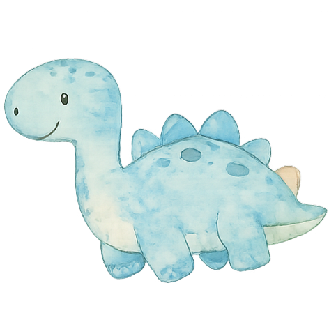
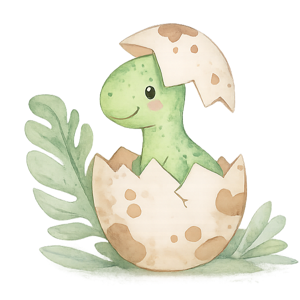

28 de Fevereiro de 2026
Às 11h – Igreja da Parede
Almoço no Restaurante Bérrio
Querida família e amigos,
É com muito carinho que vos convidamos para a celebração do batismo e primeiro aniversário do Francisco Dinis 🥳😍🤩 Será um momento muito especial pois marca 1 ano desde que o nosso fofinho nasceu! 😊
1 ano incrível de amor, crescimento e descobertas que foi o nosso primeiro ano como pais! 💙💚
Esperemos contar com a vossa presença neste dia tão especial da vida do Francisco Dinis 😊🥰😘
Para nós o mais importante é a vossa presença mas se quiserem oferecer algo ao Francisco Dinis, fica aqui a nossa “Wish List” 🥰😊
Ver Wish List